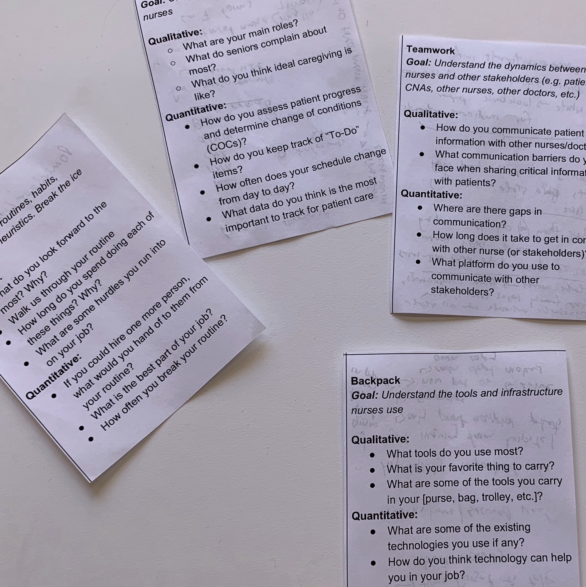

<html>
<head>
    <title>Welcome to the future of elder care</title>
    <meta name="viewport" content="width=device-width, initial-scale=1">
    <link rel="icon" type="image/gif/png" href="sova.png">
    <link rel="stylesheet" type="text/css" media="screen" href="sova.css" />
</head>
<style>
#team{
    background-color: #ece6fe;
    width: 100%;
    color: #7979bf;
    padding-bottom: 30px;
}

p{
    font-family: HKGrotesk-Regular;
}

.content_title{
    position: absolute;
    top: 45%;
    left: 50%;
    transform: translate(-50%, -50%);
    max-width: 450px;
    background-color: #7979bf;
    color: white;
    padding: 20px;
    box-shadow: 0px 5px 20px -5px black;    
    text-align: center;
}


</style>    
</body>
</html>
    


    
<div id="outercontainer">
    <div id="introduction" style="background-image: url('vernonfiles.jpg'); max-height: 400px; margin-bottom: 30px;">
        <div id="header">
            <a href="index.html" id="logo" class="menuitem">
            
            </a>
            <div id="menubar">
                <a href="about.html" class="menuitem" style="padding-top: 14px;">
                    <div >About</div>
                </a>
                <a href="mailto:sovageriatric@gmail.com?Subject=Sova%20Demo" class="menuitem" style="padding-top: 14px;">
                <div id="demo_container">
                    <div>Get a demo</div>
                </div>
                </a>
            </div>
        </div>
        <h1 id="blurb">Our story</h1>
    </div>

    <div class="block">
        <p>
            With a rapidly aging population, current infrastructure is not growing fast enough to support demand, and the facilities currently catering to this population are understaffed and overburdened. 
            Although the underlying infrastructure to support an aging population exists, facilities are burdened with inefficiencies like paperwork that shift focus away from patients and lead to a neglect in care. Furthermore, Furthermore, existing digital systems create workflow barriers because they aren't designed for users of the system. 
        </p>
        <p>
            We realized there is an opportunity to help lower the burden for staff at various geriatric facilities so that they can focus on providing care. 
            There is an opportunity to reduce the number of misdosages, lapses in patient care, distraction, and preventable medical complications. 
            <!-- What if staff could have access to the relevant information at the right time, have easier ways to share information with relevant stakeholders, and track patient status and health trends? -->
        </p>
       

        

    </div>

    


    <div class="block">
        <div class="half_block_l">
            <h1 style="margin-top: 0px;">Research Driven UI</h1>
            <p>We're building Sova with the mission of transforming geriatric care. And the foundation of our mission is building this for the relevant stakeholders and users of our app. Our focus has thus been on building and designing this alongside nurses, administrators, and other staff to make this as intuitive as traditional consumer apps.</p>
        </div>
        <div class="half_block_r">
            
        </div>
    </div>
    <br>
    <div class="block">
        <div class="half_block_l">
            
        </div>
        <div class="half_block_r">
            <h1 style="margin-top: 0px;">Optimized for independent facilities</h1>
            <p>Sova is designed for smaller facilities without the resources of a large conglomerate. The focus is on helping independent facilities shine for the level of personal care they provide, while also giving growth resources and tools for the facility</p>
        </div>
    </div>
    <br><br>

    
    
    

    <div id="team">
        <div class="headerimg" style="z-index: 0;">
            
            <h1 class="content_title">Meet our Team</h1>
        </div>


        <div class="block">
            <div class="half_block_l" style="text-align: center">
                
                <h1 style="text-align: center">Anant Vasudevan</h1>
                <p style="text-align: center">Project Manager + Designer</p>
            </div>

            <div class="half_block_r" style="text-align: center">
                
                <h1 >Nikol Safronova</h1>
                <p>Designer</p>
            </div>

            <div class="half_block_l" style="text-align: center">
                
                <h1>Ronak Upadhyaya</h1>
                <p>Developer</p>
            </div>

            <div class="half_block_r" style="text-align: center">
                
                <h1>Joshua Joseph</h1>
                <p>Developer</p>
            </div>
        </div>
        <h1 style="text-align: center">Advisors</h1>
    </div>


    
  </div>